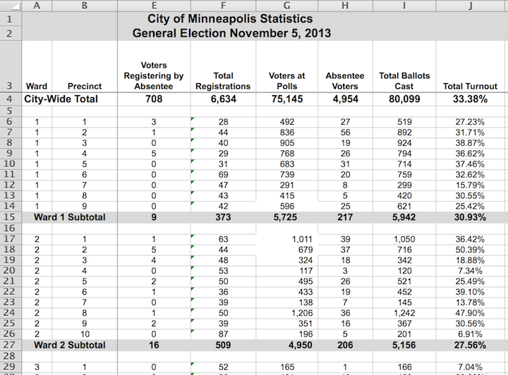
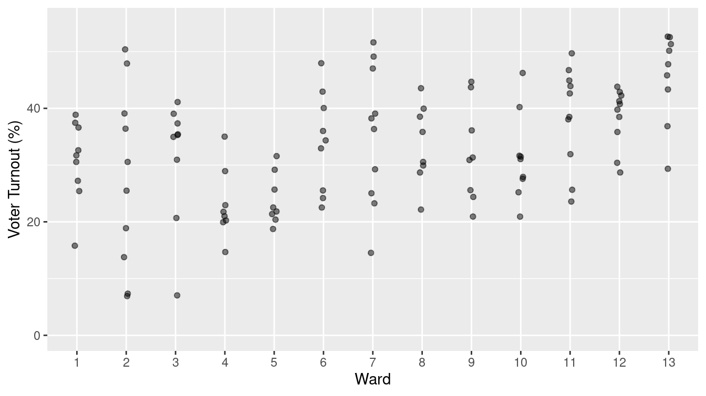
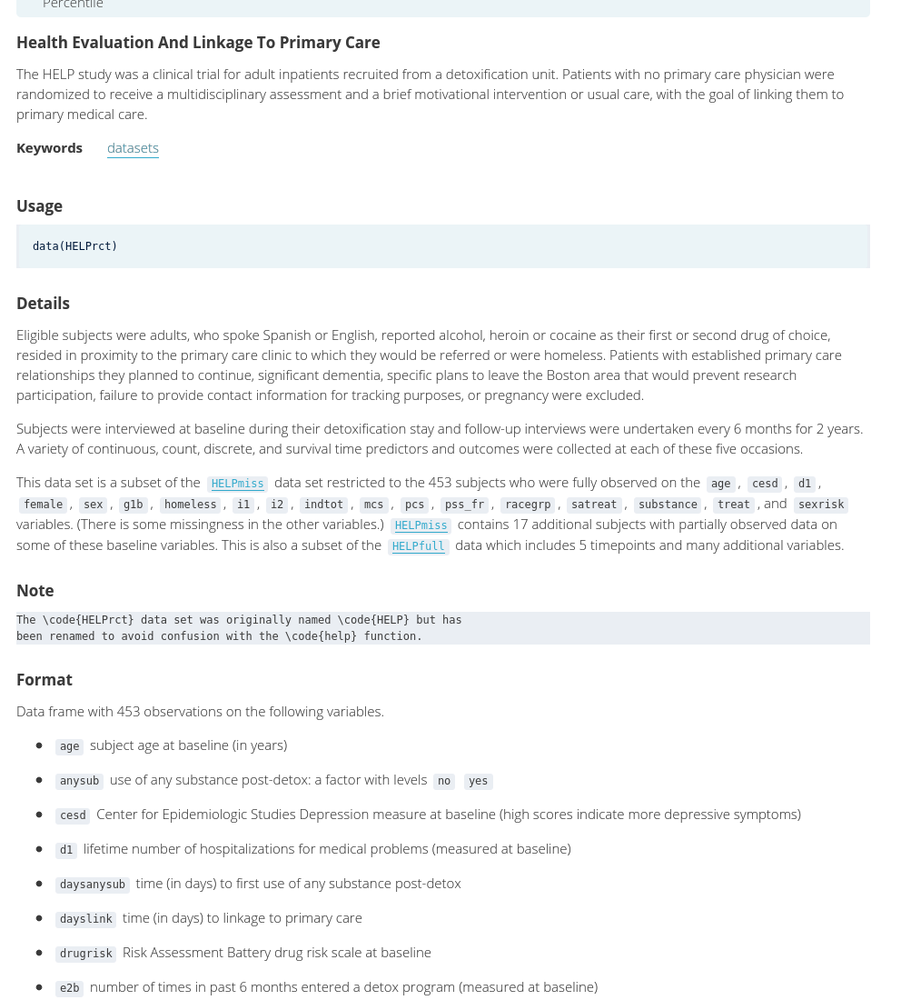
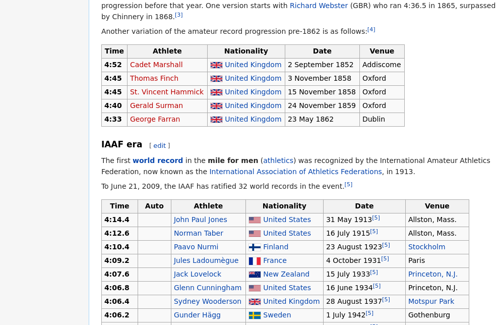
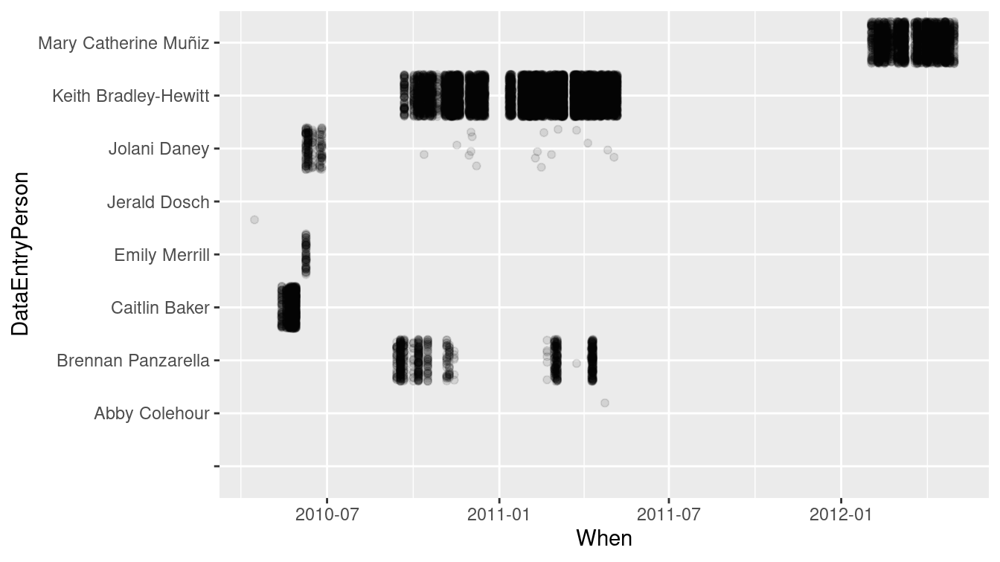
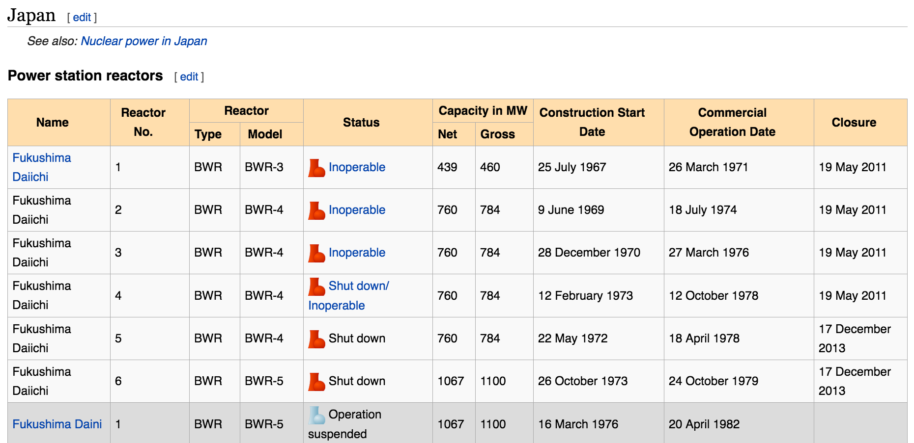
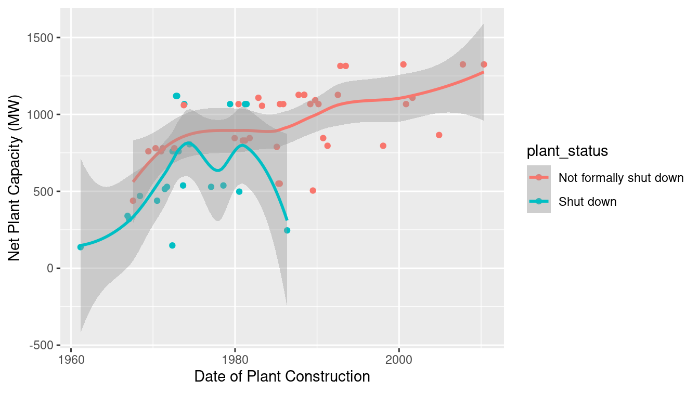

Chapter 6 Tidy data
In this chapter, we will continue to develop data wrangling skills. In particular, we will discuss tidy data, common file formats, and techniques for scraping and cleaning data, especially dates. Together with the material from Chapters 4 and 5, these skills will provide facility with wrangling data that is foundational for data science.
6.1 Tidy data
6.1.1 Motivation
Gapminder (Rosling, Rönnlund, and Rosling 2005) is the brainchild of the late Swedish physician and public health researcher Hans Rosling.
Gapminder contains data about countries over time for a variety of different variables such as the prevalence of HIV (human immunodeficiency virus) among adults aged 15 to 49 and other health and economic indicators. These data are stored in Google Sheets, or one can download them as Microsoft Excel workbooks. The typical presentation of a small subset of such data is shown below, where we have used the googlesheets4 package to pull these data directly into R. (See Section 6.2.4 for a description of the unnest() function.)
library(tidyverse)
library(mdsr)
library(googlesheets4)
hiv_key <- "1kWH_xdJDM4SMfT_Kzpkk-1yuxWChfurZuWYjfmv51EA"
hiv <- read_sheet(hiv_key) %>%
rename(Country = 1) %>%
filter(
Country %in% c("United States", "France", "South Africa")
) %>%
select(Country, `1979`, `1989`, `1999`, `2009`) %>%
unnest(cols = c(`2009`)) %>%
mutate(across(matches("[0-9]"), as.double))
hiv# A tibble: 3 × 5
Country `1979` `1989` `1999` `2009`
<chr> <dbl> <dbl> <dbl> <dbl>
1 France NA NA 0.3 0.4
2 South Africa NA NA 14.8 17.2
3 United States 0.0318 NA 0.5 0.6
The data set has the form of a two-dimensional array where each of the \(n=3\) rows represents a country and each of the \(p=4\) columns is a year.
Each entry represents the percentage of adults aged 15 to 49 living with HIV in the \(i^{th}\) country in the \(j^{th}\) year.
This presentation of the data has some advantages.
First, it is possible (with a big enough display) to see all of the data.
One can quickly follow the trend over time for a particular country, and one can also estimate quite easily the percentage of data that is missing (e.g., NA).
If visual inspection is the primary analytical technique, this spreadsheet-style presentation can be convenient.
Alternatively, consider this presentation of those same data.
hiv %>%
pivot_longer(-Country, names_to = "Year", values_to = "hiv_rate")# A tibble: 12 × 3
Country Year hiv_rate
<chr> <chr> <dbl>
1 France 1979 NA
2 France 1989 NA
3 France 1999 0.3
4 France 2009 0.4
5 South Africa 1979 NA
6 South Africa 1989 NA
7 South Africa 1999 14.8
8 South Africa 2009 17.2
9 United States 1979 0.0318
10 United States 1989 NA
11 United States 1999 0.5
12 United States 2009 0.6 While our data can still be represented by a two-dimensional array, it now has \(np=12\) rows and just three columns. Visual inspection of the data is now more difficult, since our data are long and very narrow—the aspect ratio is not similar to that of our screen.
It turns out that there are substantive reasons to prefer the long (or tall), narrow version of these data. With multiple tables (see Chapter 15), it is a more efficient way for the computer to store and retrieve the data. It is more convenient for the purpose of data analysis. And it is more scalable, in that the addition of a second variable simply contributes another column, whereas to add another variable to the spreadsheet presentation would require a confusing three-dimensional view, multiple tabs in the spreadsheet, or worse, merged cells.
These gains come at a cost: we have relinquished our ability to see all the data at once. When data sets are small, being able to see them all at once can be useful, and even comforting. But in this era of big data, a quest to see all the data at once in a spreadsheet layout is a fool’s errand. Learning to manage data via programming frees us from the click-and-drag paradigm popularized by spreadsheet applications, allows us to work with data of arbitrary size, and reduces errors. Recording our data management operations in code also makes them reproducible (see Appendix D)—an increasingly necessary trait in this era of collaboration. It enables us to fully separate the raw data from our analysis, which is difficult to achieve using a spreadsheet.
(ref:files-tip)
(ref:files-tip) Always keep your raw data and your analysis in separate files. Store the uncorrected data file (with errors and problems) and make corrections with a script (see Appendix D) file that transforms the raw data into the data that will actually be analyzed. This process will maintain the provenance of your data and allow analyses to be updated with new data without having to start data wrangling from scratch.
The long, narrow format for the Gapminder data that we have outlined above is called tidy data (H. Wickham 2014). In what follows, we will further expand upon this notion and develop more sophisticated techniques for wrangling data.
6.1.2 What are tidy data?
Data can be as simple as a column of numbers in a spreadsheet file or as complex as the electronic medical records collected by a hospital. A newcomer to working with data may expect each source of data to be organized in a unique way and to require unique techniques. The expert, however, has learned to operate with a small set of standard tools. As you’ll see, each of the standard tools performs a comparatively simple task. Combining those simple tasks in appropriate ways is the key to dealing with complex data.
One reason the individual tools can be simple is that each tool gets applied to data arranged in a simple but precisely defined pattern called tidy data. Tidy data exists in systematically defined data tables (e.g., the rectangular arrays of data seen previously). Note that not all data tables are tidy.
To illustrate, Table 6.1 shows a handful of entries from a large United States Social Security Administration tabulation of names given to babies. In particular, the table shows how many babies of each sex were given each name in each year.
| year | sex | name | n |
|---|---|---|---|
| 1999 | M | Kavon | 104 |
| 1984 | F | Somaly | 6 |
| 2017 | F | Dnylah | 8 |
| 1918 | F | Eron | 6 |
| 1992 | F | Arleene | 5 |
| 1977 | F | Alissia | 5 |
| 1919 | F | Bular | 10 |
Table 6.1 shows that there were 104 boys named Kavon born in the U.S. in 1999 and 6 girls named Somaly born in 1984.
As a whole, the babynames data table covers the years 1880 through 2017 and includes a total of 348,120,517 individuals, somewhat larger than the current population of the U.S.
The data in Table 6.1 are tidy because they are organized according to two simple rules.
- The rows, called cases or observations, each refer to a specific, unique, and similar sort of thing, e.g., girls named Somaly in 1984.
- The columns, called variables, each have the same sort of value recorded for each row. For instance,
ngives the number of babies for each case;sextells which gender was assigned at birth.
When data are in tidy form, it is relatively straightforward to transform the data into arrangements that are more useful for answering interesting questions. For instance, you might wish to know which were the most popular baby names over all the years. Even though Table 6.1 contains the popularity information implicitly, we need to rearrange these data by adding up the counts for a name across all the years before the popularity becomes obvious, as in Table 6.2.
popular_names <- babynames %>%
group_by(sex, name) %>%
summarize(total_births = sum(n)) %>%
arrange(desc(total_births))| sex | name | total_births |
|---|---|---|
| M | James | 5150472 |
| M | John | 5115466 |
| M | Robert | 4814815 |
| M | Michael | 4350824 |
| F | Mary | 4123200 |
| M | William | 4102604 |
| M | David | 3611329 |
| M | Joseph | 2603445 |
| M | Richard | 2563082 |
| M | Charles | 2386048 |
The process of transforming information that is implicit in a data table into another data table that gives the information explicitly is called data wrangling. The wrangling itself is accomplished by using data verbs that take a tidy data table and transform it into another tidy data table in a different form. In Chapters 4 and 5, you were introduced to several data verbs.

Figure 6.1: Ward and precinct votes cast in the 2013 Minneapolis mayoral election.
Figure 6.1 displays results from the Minneapolis mayoral election.
Unlike babynames, it is not in tidy form, though the display is attractive and neatly laid out.
There are helpful labels and summaries that make it easy for a person to read and draw conclusions.
(For instance, Ward 1 had a higher voter turnout than Ward 2, and both wards were lower than the city total.)
However, being neat is not what makes data tidy. Figure 6.1 violates the first rule for tidy data.
- Rule 1: The rows, called cases, each must represent the same underlying attribute, that is, the same kind of thing. That’s not true in Figure 6.1. For most of the table, the rows represent a single precinct. But other rows give ward or city-wide totals. The first two rows are captions describing the data, not cases.
- Rule 2: Each column is a variable containing the same type of value for each case.
That’s mostly true in Figure 6.1, but the tidy pattern is interrupted by labels that are not variables. For instance, the first two cells in row 15 are the label “Ward 1 Subtotal,” which is different from the ward/precinct identifiers that are the values in most of the first column.
Conforming to the rules for tidy data simplifies summarizing and analyzing data. For instance, in the tidy babynames table, it is easy (for a computer) to find the total number of babies: just add up all the numbers in the n variable. It is similarly easy to find the number of cases: just count the rows. And if you want to know the total number of Ahmeds or Sherinas across the years, there is an easy way to do that.
In contrast, it would be more difficult in the Minneapolis election data to find, say, the total number of ballots cast. If you take the seemingly obvious approach and add up the numbers in column I of Figure 6.1 (labeled “Total Ballots Cast”), the result will be three times the true number of ballots, because some of the rows contain summaries, not cases.
Indeed, if you wanted to do calculations based on the Minneapolis election data, you would be far better off to put it in a tidy form.
| ward | precinct | registered | voters | absentee | total_turnout |
|---|---|---|---|---|---|
| 1 | 1 | 28 | 492 | 27 | 0.272 |
| 1 | 4 | 29 | 768 | 26 | 0.366 |
| 1 | 7 | 47 | 291 | 8 | 0.158 |
| 2 | 1 | 63 | 1011 | 39 | 0.364 |
| 2 | 4 | 53 | 117 | 3 | 0.073 |
| 2 | 7 | 39 | 138 | 7 | 0.138 |
| 2 | 10 | 87 | 196 | 5 | 0.069 |
| 3 | 3 | 71 | 893 | 101 | 0.374 |
| 3 | 6 | 102 | 927 | 71 | 0.353 |
The tidy form in Table 6.3 is, admittedly, not as attractive as the form published by the Minneapolis government. But it is much easier to use for the purpose of generating summaries and analyses.
Once data are in a tidy form, you can present them in ways that can be more effective than a formatted spreadsheet. For example, the data graphic in Figure 6.2 presents the turnout within each precinct for each ward in a way that makes it easy to see how much variation there is within and among wards and precincts.

Figure 6.2: A graphical depiction of voter turnout by precinct in the different wards.
The tidy format
also makes it easier to bring together data from different sources. For instance, to explain the variation in voter turnout, you might want to consider variables such as party affiliation, age, income, etc.
Such data might be available on a ward-by-ward basis from other records, such as public voter registration logs and census records.
Tidy data can be wrangled into forms that can be connected to one another (i.e., using the inner_join() function from Chapter 5).
This task would be difficult if you had to deal with an idiosyncratic format for each different source of data.
6.1.2.1 Variables
In data science, the word variable has a different meaning than in mathematics. In algebra, a variable is an unknown quantity. In data, a variable is known—it has been measured. Rather, the word variable refers to a specific quantity or quality that can vary from case to case. There are two major types of variables:
- Categorical variables: record type or category and often take the form of a word.
- Quantitative variables: record a numerical attribute. A quantitative variable is just what it sounds like: a number.
A categorical variable tells you into which category or group a case falls.
For instance, in the baby names data table, sex is a categorical variable with two levels F and M, standing for female and male.
Similarly, the name variable is categorical. It happens that there are 97,310 different levels for name, ranging from Aaron, Ab, and Abbie to Zyhaire, Zylis, and Zymya.
6.1.2.2 Cases and what they represent
As noted previously, a row of a tidy data table refers to a case. To this point, you may have little reason to prefer the word case to row. When working with a data table, it is important to keep in mind what a case stands for in the real world. Sometimes the meaning is obvious. For instance, Table 6.4 is a tidy data table showing the ballots in the Minneapolis mayoral election in 2013. Each case is an individual voter’s ballot. (The voters were directed to mark their ballot with their first choice, second choice, and third choice among the candidates. This is part of a procedure called rank choice voting.)
| Precinct | First | Second | Third | Ward |
|---|---|---|---|---|
| P-04 | undervote | undervote | undervote | W-6 |
| P-06 | BOB FINE | MARK ANDREW | undervote | W-10 |
| P-02D | NEAL BAXTER | BETSY HODGES | DON SAMUELS | W-7 |
| P-01 | DON SAMUELS | undervote | undervote | W-5 |
| P-03 | CAM WINTON | DON SAMUELS | OLE SAVIOR | W-1 |
The case in Table 6.4 is a different sort of thing than the case in Table 6.3. In Table 6.3, a case is a ward in a precinct. But in Table 6.4, the case is an individual ballot. Similarly, in the baby names data (Table 6.1), a case is a name and sex and year while in Table 6.2 the case is a name and sex.
When thinking about cases, ask this question: What description would make every case unique? In the vote summary data, a precinct does not uniquely identify a case. Each individual precinct appears in several rows. But each precinct and ward combination appears once and only once. Similarly, in Table 6.1, name and sex do not specify a unique case. Rather, you need the combination of name-sex-year to identify a unique row.
6.1.2.3 Runners and races
Table 6.5 displays some of the results from a 10-mile running race held each year in Washington, D.C.
| name.yob | sex | age | year | gun |
|---|---|---|---|---|
| jane polanek 1974 | F | 32 | 2006 | 114.5 |
| jane poole 1948 | F | 55 | 2003 | 92.7 |
| jane poole 1948 | F | 56 | 2004 | 87.3 |
| jane poole 1948 | F | 57 | 2005 | 85.0 |
| jane poole 1948 | F | 58 | 2006 | 80.8 |
| jane poole 1948 | F | 59 | 2007 | 78.5 |
| jane schultz 1964 | F | 35 | 1999 | 91.4 |
| jane schultz 1964 | F | 37 | 2001 | 79.1 |
| jane schultz 1964 | F | 38 | 2002 | 76.8 |
| jane schultz 1964 | F | 39 | 2003 | 82.7 |
| jane schultz 1964 | F | 40 | 2004 | 87.9 |
| jane schultz 1964 | F | 41 | 2005 | 91.5 |
| jane schultz 1964 | F | 42 | 2006 | 88.4 |
| jane smith 1952 | F | 47 | 1999 | 90.6 |
| jane smith 1952 | F | 49 | 2001 | 97.9 |
What is the meaning of a case here? It is tempting to think that a case is a person. After all, it is people who run road races. But notice that individuals appear more than once: Jane Poole ran each year from 2003 to 2007. (Her times improved consistently as she got older!) Jane Schultz ran in the races from 1999 to 2006, missing only the year 2000 race. This suggests that the case is a runner in one year’s race.
6.1.2.4 Codebooks
Data tables do not necessarily display all the variables needed to figure out what makes each row unique. For such information, you sometimes need to look at the documentation of how the data were collected and what the variables mean.
The codebook is a document—separate from the data table—that describes various aspects of how the data were collected, what the variables mean and what the different levels of categorical variables refer to.
The word codebook comes from the days when data was encoded for the computer in ways that make it hard for a human to read.
A codebook should include information about how the data were collected and what constitutes a case.
Figure 6.3 shows the codebook for the HELPrct data in the mosaicData package. In R, codebooks for data tables in packages are available from the help() function.
help(HELPrct)

Figure 6.3: Part of the codebook for the HELPrct data table from the mosaicData package.
For the runners data in Table 6.5, a codebook should tell you that the meaning of the gun variable is the time from when the start gun went off to when the runner crosses the finish line and that the unit of measurement is minutes. It should also state what might be obvious: that age is the person’s age in years and sex has two levels, male and female, represented by M and F.
6.1.2.5 Multiple tables
It is often the case that creating a meaningful display of data involves combining data from different sources and about different kinds of things. For instance, you might want your analysis of the runners’ performance data in Table 6.5 to include temperature and precipitation data for each year’s race. Such weather data is likely contained in a table of daily weather measurements.
In many circumstances, there will be multiple tidy tables, each of which contains information relative to your analysis, but which has a different kind of thing as a case.
We saw in Chapter 5 how the inner_join() and left_join() functions can be used to combine multiple tables, and in Chapter 15 we will further develop skills for working with relational databases.
For now, keep in mind that being tidy is not about shoving everything into one table.
6.2 Reshaping data
Each row of a tidy data table is an individual case. It is often useful to re-organize the same data in a such a way that a case has a different meaning. This can make it easier to perform wrangling tasks such as comparisons, joins, and the inclusion of new data.
Consider the format of BP_wide shown in Table 6.6, in which each case is a research study subject and there are separate variables for the measurement of systolic blood pressure (SBP) before and after exposure to a stressful environment.
Exactly the same data can be presented in the format of the BP_narrow data table (Table 6.7), where the case is an individual occasion for blood pressure measurement.
| subject | before | after |
|---|---|---|
| BHO | 160 | 115 |
| GWB | 120 | 135 |
| WJC | 105 | 145 |
| subject | when | sbp |
|---|---|---|
| BHO | before | 160 |
| GWB | before | 120 |
| WJC | before | 105 |
| BHO | after | 115 |
| GWB | after | 135 |
| WJC | after | 145 |
Each of the formats BP_wide and BP_narrow has its advantages and its disadvantages.
For example, it is easy to find the before-and-after change in blood pressure using BP_wide.
BP_wide %>%
mutate(change = after - before)# A tibble: 3 × 4
subject before after change
<chr> <dbl> <dbl> <dbl>
1 BHO 160 115 -45
2 GWB 120 135 15
3 WJC 105 145 40On the other hand, a narrow format is more flexible for including additional variables, for example the date of the measurement or the diastolic blood pressure as in Table 6.8. The narrow format also makes it feasible to add in additional measurement occasions. For instance, Table 6.8 shows several “after” measurements for subject “WJC.” (Such repeated measures are a common feature of scientific studies.) A simple strategy allows you to get the benefits of either format: convert from wide to narrow or from narrow to wide as suits your purpose.
| subject | when | sbp | dbp | date |
|---|---|---|---|---|
| BHO | before | 160 | 69 | 2007-06-19 |
| GWB | before | 120 | 54 | 1998-04-21 |
| BHO | before | 155 | 65 | 2005-11-08 |
| WJC | after | 145 | 75 | 2002-11-15 |
| WJC | after | NA | 65 | 2010-03-26 |
| WJC | after | 130 | 60 | 2013-09-15 |
| GWB | after | 135 | NA | 2009-05-08 |
| WJC | before | 105 | 60 | 1990-08-17 |
| BHO | after | 115 | 78 | 2017-06-04 |
6.2.1 Data verbs for converting wide to narrow and vice versa
Transforming a data table from wide to narrow is the action of the pivot_longer() data verb: A wide data table is the input and a narrow data table is the output. The reverse task, transforming from narrow to wide, involves the data verb pivot_wider(). Both functions are implemented in the tidyr package.
6.2.2 Pivoting wider
The pivot_wider() function converts a data table from narrow to wide. Carrying out this operation involves specifying some information in the arguments to the function. The values_from argument is the name of the variable in the narrow format that is to be divided up into multiple variables in the resulting wide format. The names_from argument is the name of the variable in the narrow format that identifies for each case individually which column in the wide format will receive the value.
For instance, in the narrow form of BP_narrow (Table 6.7) the values_from variable is sbp. In the corresponding wide form, BP_wide (Table 6.6), the information in sbp will be spread between two variables: before and after. The names_from variable in BP_narrow is when. Note that the different categorical levels in when specify which variable in BP_wide will be the destination for the sbp value of each case.
Only the names_from and values_from variables are involved in the transformation from narrow to wide. Other variables in the narrow table, such as subject in BP_narrow, are used to define the cases. Thus, to translate from BP_narrow to BP_wide we would write this code:
BP_narrow %>%
pivot_wider(names_from = when, values_from = sbp)# A tibble: 3 × 3
subject before after
<chr> <dbl> <dbl>
1 BHO 160 115
2 GWB 120 135
3 WJC 105 1456.2.3 Pivoting longer
Now consider how to transform BP_wide into BP_narrow.
The names of the variables to be gathered together, before and after, will become the categorical levels in the narrow form.
That is, they will make up the names_to variable in the narrow form.
The data analyst has to invent a name for this variable. There are all sorts of sensible possibilities, for instance before_or_after.
In gathering BP_wide into BP_narrow, we chose the concise variable name when.
Similarly, a name must be specified for the variable that is to hold the values in the variables being gathered.
There are many reasonable possibilities.
It is sensible to choose a name that reflects the kind of thing those values are, in this case systolic blood pressure.
So, sbp is a good choice.
Finally, we need to specify which variables are to be gathered.
For instance, it hardly makes sense to gather subject with the other variables; it will remain as a separate variable in the narrow result.
Values in subject will be repeated as necessary to give each case in the narrow format its own correct value of subject.
In summary, to convert BP_wide
into BP_narrow, we make the following call to pivot_longer().
BP_wide %>%
pivot_longer(-subject, names_to = "when", values_to = "sbp")# A tibble: 6 × 3
subject when sbp
<chr> <chr> <dbl>
1 BHO before 160
2 BHO after 115
3 GWB before 120
4 GWB after 135
5 WJC before 105
6 WJC after 1456.2.4 List-columns
Consider the following simple summarization of the blood pressure data. Using the techniques developed in Section 4.1.4, we can compute the mean systolic blood pressure for each subject both before and after exposure.
BP_full %>%
group_by(subject, when) %>%
summarize(mean_sbp = mean(sbp, na.rm = TRUE))# A tibble: 6 × 3
# Groups: subject [3]
subject when mean_sbp
<chr> <chr> <dbl>
1 BHO after 115
2 BHO before 158.
3 GWB after 135
4 GWB before 120
5 WJC after 138.
6 WJC before 105 But what if we want to do additional analysis on the blood pressure data? The individual observations are not retained in the summarized output. Can we create a summary of the data that still contains all of the observations?
One simplistic approach would be to use paste() with the collapse argument to condense the individual operations into a single vector.
BP_summary <- BP_full %>%
group_by(subject, when) %>%
summarize(
sbps = paste(sbp, collapse = ", "),
dbps = paste(dbp, collapse = ", ")
)This can be useful for seeing the data, but you can’t do much computing on it, because the variables sbps and dbps are character vectors. As a result, trying to compute, say, the mean of the systolic blood pressures won’t work as you hope it might. Note that the means computed below are wrong.
BP_summary %>%
mutate(mean_sbp = mean(parse_number(sbps)))# A tibble: 6 × 5
# Groups: subject [3]
subject when sbps dbps mean_sbp
<chr> <chr> <chr> <chr> <dbl>
1 BHO after 115 78 138.
2 BHO before 160, 155 69, 65 138.
3 GWB after 135 NA 128.
4 GWB before 120 54 128.
5 WJC after 145, NA, 130 75, 65, 60 125
6 WJC before 105 60 125 Additionally, you would have to write the code to do the summarization for every variable in your data set, which could get cumbersome.
Instead, the nest() function will collapse all of the ungrouped variables in a data frame into a tibble (a simple data frame).
This creates a new variable of type list, which by default has the name data. Each element of that list has the type tibble. Although you can’t see all of the data in the output printed here, it’s all in there. Variables in data frames that have type list are called list-columns.
BP_nested <- BP_full %>%
group_by(subject, when) %>%
nest()
BP_nested# A tibble: 6 × 3
# Groups: subject, when [6]
subject when data
<chr> <chr> <list>
1 BHO before <tibble [2 × 3]>
2 GWB before <tibble [1 × 3]>
3 WJC after <tibble [3 × 3]>
4 GWB after <tibble [1 × 3]>
5 WJC before <tibble [1 × 3]>
6 BHO after <tibble [1 × 3]>This construction works because a data frame is just a list of vectors of the same length, and the type of those vectors is arbitrary. Thus, the data variable is a vector of type list that consists of tibbles. Note also that the dimensions of each tibble (items in the data list) can be different.
The ability to collapse a long data frame into its nested form is particularly useful in the context of model fitting, which we illustrate in Chapter 11.
While every list-column has the type list, the type of the data contained within that list can be anything. Thus, while the data variable contains a list of tibbles, we can extract only the systolic blood pressures, and put them in their own list-column. It’s tempting to try to pull() the sbp variable out like this:
BP_nested %>%
mutate(sbp_list = pull(data, sbp))Error: Problem with `mutate()` column `sbp_list`.
ℹ `sbp_list = pull(data, sbp)`.
x no applicable method for 'pull' applied to an object of class "list"
ℹ The error occurred in group 1: subject = "BHO", when = "after".The problem is that data is not a tibble.
Rather, it’s a list of tibbles. To get around this, we need to use the map() function, which is described in Chapter 7.
For now, it’s enough to understand that we need to apply the pull() function to each item in the data list.
The map() function allows us to do just that, and further, it always returns a list, and thus creates a new list-column.
BP_nested <- BP_nested %>%
mutate(sbp_list = map(data, pull, sbp))
BP_nested# A tibble: 6 × 4
# Groups: subject, when [6]
subject when data sbp_list
<chr> <chr> <list> <list>
1 BHO before <tibble [2 × 3]> <dbl [2]>
2 GWB before <tibble [1 × 3]> <dbl [1]>
3 WJC after <tibble [3 × 3]> <dbl [3]>
4 GWB after <tibble [1 × 3]> <dbl [1]>
5 WJC before <tibble [1 × 3]> <dbl [1]>
6 BHO after <tibble [1 × 3]> <dbl [1]>Again, note that sbp_list is a list, with each item in the list being a vector of type double.
These vectors need not have the same length!
We can verify this by isolating the sbp_list variable with the pluck() function.
BP_nested %>%
pluck("sbp_list")[[1]]
[1] 160 155
[[2]]
[1] 120
[[3]]
[1] 145 NA 130
[[4]]
[1] 135
[[5]]
[1] 105
[[6]]
[1] 115Because all of the systolic blood pressure readings are contained within this list, a further application of map() will allow us to compute the mean.
BP_nested <- BP_nested %>%
mutate(sbp_mean = map(sbp_list, mean, na.rm = TRUE))
BP_nested# A tibble: 6 × 5
# Groups: subject, when [6]
subject when data sbp_list sbp_mean
<chr> <chr> <list> <list> <list>
1 BHO before <tibble [2 × 3]> <dbl [2]> <dbl [1]>
2 GWB before <tibble [1 × 3]> <dbl [1]> <dbl [1]>
3 WJC after <tibble [3 × 3]> <dbl [3]> <dbl [1]>
4 GWB after <tibble [1 × 3]> <dbl [1]> <dbl [1]>
5 WJC before <tibble [1 × 3]> <dbl [1]> <dbl [1]>
6 BHO after <tibble [1 × 3]> <dbl [1]> <dbl [1]>BP_nested still has a nested structure. However, the column sbp_mean is a list of double vectors, each of which has a single element.
We can use unnest() to undo the nesting structure of that column. In this case, we retain the same 6 rows, each corresponding to one subject either before or after intervention.
BP_nested %>%
unnest(cols = c(sbp_mean))# A tibble: 6 × 5
# Groups: subject, when [6]
subject when data sbp_list sbp_mean
<chr> <chr> <list> <list> <dbl>
1 BHO before <tibble [2 × 3]> <dbl [2]> 158.
2 GWB before <tibble [1 × 3]> <dbl [1]> 120
3 WJC after <tibble [3 × 3]> <dbl [3]> 138.
4 GWB after <tibble [1 × 3]> <dbl [1]> 135
5 WJC before <tibble [1 × 3]> <dbl [1]> 105
6 BHO after <tibble [1 × 3]> <dbl [1]> 115 This computation gives the correct mean blood pressure for each subject at each time point.
On the other hand, an application of unnest() to the sbp_list variable, which has more than one observation for each row, results in a data frame with one row for each observed subject on a specific date. This transforms the data back into the same unit of observation as BP_full.
BP_nested %>%
unnest(cols = c(sbp_list))# A tibble: 9 × 5
# Groups: subject, when [6]
subject when data sbp_list sbp_mean
<chr> <chr> <list> <dbl> <list>
1 BHO before <tibble [2 × 3]> 160 <dbl [1]>
2 BHO before <tibble [2 × 3]> 155 <dbl [1]>
3 GWB before <tibble [1 × 3]> 120 <dbl [1]>
4 WJC after <tibble [3 × 3]> 145 <dbl [1]>
5 WJC after <tibble [3 × 3]> NA <dbl [1]>
6 WJC after <tibble [3 × 3]> 130 <dbl [1]>
7 GWB after <tibble [1 × 3]> 135 <dbl [1]>
8 WJC before <tibble [1 × 3]> 105 <dbl [1]>
9 BHO after <tibble [1 × 3]> 115 <dbl [1]>6.2.5 Example: Gender-neutral names
In “A Boy Named Sue” country singer Johnny Cash
famously told the story of a boy toughened in life—eventually reaching gratitude—by being given a traditional girl’s name.
The conceit is of course the rarity of being a boy with the name Sue, and indeed, Sue is given to about 300 times as many girls as boys (at least being recorded in this manner: data entry errors may account for some of these names).
babynames %>%
filter(name == "Sue") %>%
group_by(name, sex) %>%
summarize(total = sum(n))# A tibble: 2 × 3
# Groups: name [1]
name sex total
<chr> <chr> <int>
1 Sue F 144465
2 Sue M 519On the other hand, some names that are predominantly given to girls are also commonly given to boys.
Although only 15% of people named Robin are male, it is easy to think of a few famous men with that name: the actor Robin Williams, the singer Robin Gibb, and the basketball player Robin Lopez (not to mention Batman’s sidekick).
babynames %>%
filter(name == "Robin") %>%
group_by(name, sex) %>%
summarize(total = sum(n))# A tibble: 2 × 3
# Groups: name [1]
name sex total
<chr> <chr> <int>
1 Robin F 289395
2 Robin M 44616This computational paradigm (e.g., filtering) works well if you want to look at gender balance in one name at a time, but suppose you want to find the most gender-neutral names from all 97,310 names in babynames?
For this, it would be useful to have the results in a wide format, like the one shown below.
babynames %>%
filter(name %in% c("Sue", "Robin", "Leslie")) %>%
group_by(name, sex) %>%
summarize(total = sum(n)) %>%
pivot_wider(
names_from = sex,
values_from = total
)# A tibble: 3 × 3
# Groups: name [3]
name F M
<chr> <int> <int>
1 Leslie 266474 112689
2 Robin 289395 44616
3 Sue 144465 519The pivot_wider() function can help us generate the wide format. Note that the sex variable is the names_from used in the conversion.
A fill of zero is appropriate here: For a name like Aaban or Aadam, where there are no females, the entry for F should be zero.
baby_wide <- babynames %>%
group_by(sex, name) %>%
summarize(total = sum(n)) %>%
pivot_wider(
names_from = sex,
values_from = total,
values_fill = 0
)
head(baby_wide, 3)# A tibble: 3 × 3
name F M
<chr> <int> <int>
1 Aabha 35 0
2 Aabriella 32 0
3 Aada 5 0One way to define “approximately the same” is to take the smaller of the ratios M/F and F/M. If females greatly outnumber males, then F/M will be large, but M/F will be small. If the sexes are about equal, then both ratios will be near one. The smaller will never be greater than one, so the most balanced names are those with the smaller of the ratios near one.
The code to identify
the most balanced gender-neutral names out of the names with more than 50,000 babies of each sex is shown below.
Remember, a ratio of 1 means exactly balanced; a ratio of 0.5 means two to one in favor of one sex; 0.33 means three to one.
(The pmin() transformation function returns the smaller of the two arguments for each individual case.)
baby_wide %>%
filter(M > 50000, F > 50000) %>%
mutate(ratio = pmin(M / F, F / M) ) %>%
arrange(desc(ratio)) %>%
head(3)# A tibble: 3 × 4
name F M ratio
<chr> <int> <int> <dbl>
1 Riley 100881 92789 0.920
2 Jackie 90604 78405 0.865
3 Casey 76020 110165 0.690Riley has been the most gender-balanced name, followed by Jackie. Where does your name fall on this list?
6.3 Naming conventions
Like any language, R has some rules that you cannot break, but also many conventions that you can—but should not—break. There are a few simple rules that apply when creating a name for an object:
- The name cannot start with a digit. So you cannot assign the name
100NCHSto a data frame, butNCHS100is fine. This rule is to make it easy for R to distinguish between object names and numbers. It also helps you avoid mistakes such as writing2piwhen you mean2*pi. - The name cannot contain any punctuation symbols other than
.and_. So?NCHSorN*Hanesare not legitimate names. However, you can use.and_in a name. For reasons that will be explained later, the use of.in function names has a specific meaning, but should otherwise be avoided. The use of_is preferred. - The case of the letters in the name matters. So
NCHS,nchs,Nchs, andnChs, etc., are all different names that only look similar to a human reader, not to R.
Do not use . in function names, to avoid conflicting with internal functions.
One of R’s strengths is its modularity—many people have contributed many packages that do many different things. However, this decentralized paradigm has resulted in many different people writing code using many different conventions. The resulting lack of uniformity can make code harder to read. We suggest adopting a style guide and sticking to it—we have attempted to do that in this book. However, the inescapable use of other people’s code results in inevitable deviations from that style.
In this book and in our teaching, we follow the tidyverse style guide—which is public, widely adopted, and influential—as closely as possible. It provides guidance about how and why to adopt a particular style. Other groups (e.g., Google) have adopted variants of this guide. This means:
- We use underscores (
_) in variable and function names. The use of periods (.) in function names is restricted to S3 methods. - We use spaces liberally and prefer multiline, narrow blocks of code to single lines of wide code (although we occasionally relax this to save space on the printed page).
- We use snake_case for the names of things. This means that each “word” is lowercase, and there are no spaces, only underscores. (The janitor package provides a function called
clean_names()that by default turns variable names into snake case (other styles are also supported.)
The styler package can be used to reformat code into a format that implements the tidyverse style guide.
Faithfully adopting a consistent style for code can help to improve readability and reduce errors.
6.4 Data intake
“Every easy data format is alike. Every difficult data format is difficult in its own way.”
—inspired by Leo Tolstoy and Hadley Wickham
The tools that we develop in this book allow one to work with data in R. However, most data sets are not available in R to begin with—they are often stored in a different file format. While R has sophisticated abilities for reading data in a variety of formats, it is not without limits. For data that are not in a file, one common form of data intake is Web scraping, in which data from the internet are processed as (structured) text and converted into data. Such data often have errors that stem from blunders in data entry or from deficiencies in the way data are stored or coded. Correcting such errors is called data cleaning.
The native file format for R is usually given the suffix .rda (or sometimes, .RData).
Any object in your R environment can be written to this file format using the saveRDS() command.
Using the compress argument will make these files smaller.
saveRDS(mtcars, file = "mtcars.rda", compress = TRUE)This file format is usually an efficient means for storing data, but it is not the most portable.
To load a stored object into your R environment, use the readRDS() command.
mtcars <- readRDS("mtcars.rda")
Maintaining the provenance of data from beginning to the end of an analysis is an important part of a reproducible workflow. This can be facilitated by creating one Markdown file or notebook that undertakes the data wrangling and generates an analytic data set (using saveRDS()) that can be read (using readRDS()) into a second Markdown file.
6.4.1 Data-table friendly formats
Many formats for data are essentially equivalent to data tables. When you come across data in a format that you don’t recognize, it is worth checking whether it is one of the data-table–friendly formats. Sometimes the filename extension provides an indication. Here are several, each with a brief description:
- CSV: a non-proprietary comma-separated text format that is widely used for data exchange between different software packages. CSVs are easy to understand, but are not compressed, and therefore can take up more space on disk than other formats.
- Software-package specific format: some common examples include:
- Octave (and through that, MATLAB): widely used in engineering and physics
- Stata: commonly used for economic research
- SPSS: commonly used for social science research
- Minitab: often used in business applications
- SAS: often used for large data sets
- Epi: used by the Centers for Disease Control (CDC) for health and epidemiology data
Relational databases: the form that much of institutional, actively-updated data are stored in. This includes business transaction records, government records, Web logs, and so on. (See Chapter 15 for a discussion of relational database management systems.)
Excel: a set of proprietary spreadsheet formats heavily used in business. Watch out, though. Just because something is stored in an Excel format doesn’t mean it is a data table. Excel is sometimes used as a kind of tablecloth for writing down data with no particular scheme in mind.
Web-related: For example:
- HTML (hypertext markup language):
<table>format - XML (extensible markup language) format, a tree-based document structure
- JSON (JavaScript Object Notation) is a common data format that breaks the “rows-and-columns” paradigm (see Section 21.2.4.2)
- Google Sheets: published as HTML
- application programming interface (API)
- HTML (hypertext markup language):
The procedure for reading data in one of these formats varies depending on the format.
For Excel or Google Sheets data, it is sometimes easiest to use the application software to export the data as a CSV file.
There are also R packages for reading directly from either (readxl and googlesheets4, respectively), which are useful if the spreadsheet is being updated frequently.
For the technical software package formats, the haven package provides useful reading and writing functions.
For relational databases, even if they are on a remote server, there are several useful R packages that allow you to connect to these databases directly, most notably dbplyr and DBI.
CSV and HTML <table> formats are frequently encountered sources for data scraping, and can be read by the readr and rvest packages, respectively.
The next subsections give a bit more detail about how to read them into R.
6.4.1.1 CSV (comma separated value) files
This text format can be read with a huge variety of software. It has a data table format, with the values of variables in each case separated by commas. Here is an example of the first several lines of a CSV file:
"year","sex","name","n","prop"
1880,"F","Mary",7065,0.07238359
1880,"F","Anna",2604,0.02667896
1880,"F","Emma",2003,0.02052149
1880,"F","Elizabeth",1939,0.01986579
1880,"F","Minnie",1746,0.01788843
1880,"F","Margaret",1578,0.0161672The top row usually (but not always) contains the variable names. Quotation marks are often used at the start and end of character strings—these quotation marks are not part of the content of the string, but are useful if, say, you want to include a comma in the text of a field. CSV files are often named with the .csv suffix; it is also common for them to be named with .txt, .dat, or other things.
You will also see characters other than commas being used to delimit the fields: tabs and vertical bars (or pipes, i.e., |) are particularly common.
Be careful with date and time variables in CSV format: these can sometimes be formatted in inconsistent ways that make it more challenging to ingest.
Since reading from a CSV file is so common, several implementations are available.
The read.csv() function in the base package is perhaps the most widely used, but the more recent read_csv() function in the readr package is noticeably faster for large CSVs.
CSV files need not exist on your local hard drive.
For example, here is a way to access a .csv file over the internet using a URL (universal resource locator).
mdsr_url <- "https://raw.githubusercontent.com/mdsr-book/mdsr/master/data-raw/"
houses <- mdsr_url %>%
paste0("houses-for-sale.csv") %>%
read_csv()
head(houses, 3)# A tibble: 3 × 16
price lot_size waterfront age land_value construction air_cond fuel
<dbl> <dbl> <dbl> <dbl> <dbl> <dbl> <dbl> <dbl>
1 132500 0.09 0 42 50000 0 0 3
2 181115 0.92 0 0 22300 0 0 2
3 109000 0.19 0 133 7300 0 0 2
# … with 8 more variables: heat <dbl>, sewer <dbl>, living_area <dbl>,
# pct_college <dbl>, bedrooms <dbl>, fireplaces <dbl>, bathrooms <dbl>,
# rooms <dbl>
Just as reading a data file from the internet uses a URL, reading a file on your computer uses a complete name, called a path to the file. Although many people are used to using a mouse-based selector to access their files, being specific about the path to your files is important to ensure the reproducibility of your code (see Appendix D).
6.4.1.2 HTML tables
Web pages are HTML documents, which are then translated by a browser to the formatted content that users see. HTML includes facilities for presenting tabular content. The HTML <table> markup is often the way human-readable data is arranged.

Figure 6.4: Part of a page on mile-run world records from Wikipedia. Two separate data tables are visible. You can’t tell from this small part of the page, but there are many tables on the page. These two tables are the third and fourth in the page.
When you have the URL of a page containing one or more tables, it is sometimes easy to read them into R as data tables.
Since they are not CSVs, we can’t use read_csv(). Instead, we use functionality in the rvest package to ingest the HTML as a data structure in R.
Once you have the content of the Web page, you can translate any tables in the page from HTML to data table format.
In this brief example, we will investigate the progression of the world record time in the mile run, as detailed on Wikipedia. This page (see Figure 6.4) contains several tables, each of which contains a list of new world records for a different class of athlete (e.g., men, women, amateur, professional, etc.).
library(rvest)
url <- "http://en.wikipedia.org/wiki/Mile_run_world_record_progression"
tables <- url %>%
read_html() %>%
html_nodes("table")
The result, tables, is not a data table. Instead, it is a list (see Appendix B) of the tables found in the Web page. Use length() to find how many items there are in the list of tables.
length(tables)[1] 12
You can access any of those tables using the pluck() function from the purrr package, which extracts items from a list.
Unfortunately, as of this writing the rvest::pluck() function masks the more useful purrr::pluck() function, so we will be specific by using the double-colon operator.
The first table is pluck(tables, 1), the second table is pluck(tables, 2), and so on.
The third table—which corresponds to amateur men up until 1862—is shown in Table 6.9.
amateur <- tables %>%
purrr::pluck(3) %>%
html_table()| Time | Athlete | Nationality | Date | Venue |
|---|---|---|---|---|
| 4:52 | Cadet Marshall | United Kingdom | 2 September 1852 | Addiscome |
| 4:45 | Thomas Finch | United Kingdom | 3 November 1858 | Oxford |
| 4:45 | St. Vincent Hammick | United Kingdom | 15 November 1858 | Oxford |
| 4:40 | Gerald Surman | United Kingdom | 24 November 1859 | Oxford |
| 4:33 | George Farran | United Kingdom | 23 May 1862 | Dublin |
Likely of greater interest is the information in the fourth table, which corresponds to the current era of International Amateur Athletics Federation world records. The first few rows of that table are shown in Table 6.10. The last row of that table (not shown) contains the current world record of 3:43.13, which was set by Hicham El Guerrouj of Morocco in Rome on July 7th, 1999.
records <- tables %>%
purrr::pluck(4) %>%
html_table() %>%
select(-Auto) # remove unwanted column| Time | Athlete | Nationality | Date | Venue |
|---|---|---|---|---|
| 4:14.4 | John Paul Jones | United States | 31 May 1913[6] | Allston, Mass. |
| 4:12.6 | Norman Taber | United States | 16 July 1915[6] | Allston, Mass. |
| 4:10.4 | Paavo Nurmi | Finland | 23 August 1923[6] | Stockholm |
| 4:09.2 | Jules Ladoumègue | France | 4 October 1931[6] | Paris |
| 4:07.6 | Jack Lovelock | New Zealand | 15 July 1933[6] | Princeton, N.J. |
| 4:06.8 | Glenn Cunningham | United States | 16 June 1934[6] | Princeton, N.J. |
6.4.2 APIs
An application programming interface (API) is a protocol for interacting with a computer program that you can’t control. It is a set of agreed-upon instructions for using a “black-box—not unlike the manual for a television’s remote control. APIs provide access to massive troves of public data on the Web, from a vast array of different sources. Not all APIs are the same, but by learning how to use them, you can dramatically increase your ability to pull data into R without having to manually ``scrape” it.
If you want to obtain data from a public source, it is a good idea to check to see whether: a) the organization has a public API; b) someone has already written an R package to said interface. These packages don’t provide the actual data—they simply provide a series of R functions that allow you to access the actual data. The documentation for each package should explain how to use it to collect data from the original source.
6.4.3 Cleaning data
A person somewhat knowledgeable about running would have little trouble interpreting Tables 6.9 and 6.10 correctly.
The Time is in minutes and seconds. The Date gives the day on which the record was set. When the data table is read into R, both Time and Date are stored as character strings. Before they can be used, they have to be converted into a format that the computer can process like a date and time. Among other things, this requires dealing with the footnote (listed as [5]) at the end of the date information.
Data cleaning refers to taking the information contained in a variable and transforming it to a form in which that information can be used.
6.4.3.1 Recoding
Table 6.11 displays a few variables from the houses data table we downloaded earlier.
It describes 1,728 houses for sale in Saratoga, NY.11
The full table includes additional variables such as living_area, price, bedrooms, and bathrooms.
The data on house systems such as sewer_type and heat_type have been stored as numbers, even though they are really categorical.
| fuel | heat | sewer | construction |
|---|---|---|---|
| 3 | 4 | 2 | 0 |
| 2 | 3 | 2 | 0 |
| 2 | 3 | 3 | 0 |
| 2 | 2 | 2 | 0 |
| 2 | 2 | 3 | 1 |
There is nothing fundamentally wrong with using integers to encode, say, fuel type, though it may be confusing to interpret results. What is worse is that the numbers imply a meaningful order to the categories when there is none.
To translate the integers to a more informative coding, you first have to find out what the various codes mean. Often, this information comes from the codebook, but sometimes you will need to contact the person who collected the data.
Once you know the translation, you can use spreadsheet software (or the tribble() function) to enter them into a data table, like this one for the houses:
translations <- mdsr_url %>%
paste0("house_codes.csv") %>%
read_csv()
translations %>% head(5)# A tibble: 5 × 3
code system_type meaning
<dbl> <chr> <chr>
1 0 new_const no
2 1 new_const yes
3 1 sewer_type none
4 2 sewer_type private
5 3 sewer_type public Translations describes the codes in a format that makes it easy to add new code values as the need arises. The same information can also be presented a wide format as in Table 6.12.
codes <- translations %>%
pivot_wider(
names_from = system_type,
values_from = meaning,
values_fill = "invalid"
)| code | new_const | sewer_type | central_air | fuel_type | heat_type |
|---|---|---|---|---|---|
| 0 | no | invalid | no | invalid | invalid |
| 1 | yes | none | yes | invalid | invalid |
| 2 | invalid | private | invalid | gas | hot air |
| 3 | invalid | public | invalid | electric | hot water |
| 4 | invalid | invalid | invalid | oil | electric |
In codes, there is a column for each system type that translates the integer code to a meaningful term. In cases where the integer has no corresponding term, invalid has been entered. This provides a quick way to distinguish between incorrect entries and missing entries.
To carry out the translation, we join each variable, one at a time, to the data table of interest. Note how the by value changes for each variable:
houses <- houses %>%
left_join(
codes %>% select(code, fuel_type),
by = c(fuel = "code")
) %>%
left_join(
codes %>% select(code, heat_type),
by = c(heat = "code")
) %>%
left_join(
codes %>% select(code, sewer_type),
by = c(sewer = "code")
)Table 6.13 shows the re-coded data. We can compare this to the previous display in Table 6.11.
| fuel_type | heat_type | sewer_type |
|---|---|---|
| electric | electric | private |
| gas | hot water | private |
| gas | hot water | public |
| gas | hot air | private |
| gas | hot air | public |
| gas | hot air | private |
6.4.3.2 From strings to numbers
You have seen two major types of variables: quantitative and categorical. You are used to using quoted character strings as the levels of categorical variables, and numbers for quantitative variables.
Often, you will encounter data tables that have variables whose meaning is numeric but whose representation is a character string. This can occur when one or more cases is given a non-numeric value, e.g., not available.
The parse_number() function will translate character strings with numerical content into numbers.
The parse_character() function goes the other way.
For example, in the ordway_birds data, the Month, Day, and Year variables are all being stored as character vectors, even though their evident meaning is numeric.
ordway_birds %>%
select(Timestamp, Year, Month, Day) %>%
glimpse()Rows: 15,829
Columns: 4
$ Timestamp <chr> "4/14/2010 13:20:56", "", "5/13/2010 16:00:30", "5/13/20…
$ Year <chr> "1972", "", "1972", "1972", "1972", "1972", "1972", "197…
$ Month <chr> "7", "", "7", "7", "7", "7", "7", "7", "7", "7", "7", "7…
$ Day <chr> "16", "", "16", "16", "16", "16", "16", "16", "16", "16"…We can convert the strings to numbers using mutate() and parse_number(). Note how the empty strings (i.e., "") in those fields are automatically converted into NA’s, since they cannot be converted into valid numbers.
library(readr)
ordway_birds <- ordway_birds %>%
mutate(
Month = parse_number(Month),
Year = parse_number(Year),
Day = parse_number(Day)
)
ordway_birds %>%
select(Timestamp, Year, Month, Day) %>%
glimpse()Rows: 15,829
Columns: 4
$ Timestamp <chr> "4/14/2010 13:20:56", "", "5/13/2010 16:00:30", "5/13/20…
$ Year <dbl> 1972, NA, 1972, 1972, 1972, 1972, 1972, 1972, 1972, 1972…
$ Month <dbl> 7, NA, 7, 7, 7, 7, 7, 7, 7, 7, 7, 7, 7, 7, 7, 7, 7, 7, 7…
$ Day <dbl> 16, NA, 16, 16, 16, 16, 16, 16, 16, 16, 17, 18, 18, 18, …6.4.3.3 Dates
Dates are often recorded as character strings (e.g., 29 October 2014). Among other important properties, dates have a natural order.
When you plot values such as 16 December 2015 and 29 October 2016, you expect the December date to come after the October date, even though this is not true alphabetically of the string itself.
When plotting a value that is numeric, you expect the axis to be marked with a few round numbers. A plot from 0 to 100 might have ticks at 0, 20, 40, 60, 100. It is similar for dates. When you are plotting dates within one month, you expect the day of the month to be shown on the axis. If you are plotting a range of several years, it would be appropriate to show only the years on the axis.
When you are given dates stored as a character vector, it is usually necessary to convert them to a data type designed specifically for dates.
For instance, in the ordway_birds data, the Timestamp variable refers to the time the data were transcribed from the original lab notebook to the computer file.
This variable is currently stored as a character string, but we can translate it into a more usable date format using functions from the lubridate package.
These dates are written in a format showing month/day/year hour:minute:second. The mdy_hms() function from the lubridate package converts strings in this format to a date. Note that the data type of the When variable is now dttm.
library(lubridate)
birds <- ordway_birds %>%
mutate(When = mdy_hms(Timestamp)) %>%
select(Timestamp, Year, Month, Day, When, DataEntryPerson)
birds %>%
glimpse()Rows: 15,829
Columns: 6
$ Timestamp <chr> "4/14/2010 13:20:56", "", "5/13/2010 16:00:30", "5…
$ Year <dbl> 1972, NA, 1972, 1972, 1972, 1972, 1972, 1972, 1972…
$ Month <dbl> 7, NA, 7, 7, 7, 7, 7, 7, 7, 7, 7, 7, 7, 7, 7, 7, 7…
$ Day <dbl> 16, NA, 16, 16, 16, 16, 16, 16, 16, 16, 17, 18, 18…
$ When <dttm> 2010-04-14 13:20:56, NA, 2010-05-13 16:00:30, 201…
$ DataEntryPerson <chr> "Jerald Dosch", "Caitlin Baker", "Caitlin Baker", …With the When variable now recorded as a timestamp, we can create a sensible plot showing when each of the transcribers completed their work, as in Figure 6.5.
birds %>%
ggplot(aes(x = When, y = DataEntryPerson)) +
geom_point(alpha = 0.1, position = "jitter") 
Figure 6.5: The transcribers of the Ordway Birds from lab notebooks worked during different time intervals.
Many of the same operations that apply to numbers can be used on dates. For example, the range of dates that each transcriber worked can be calculated as a difference in times (i.e., an interval()), and shown in Table 6.14. This makes it clear that Jolani worked on the project for nearly a year (329 days), while Abby’s first transcription was also her last.
bird_summary <- birds %>%
group_by(DataEntryPerson) %>%
summarize(
start = first(When),
finish = last(When)
) %>%
mutate(duration = interval(start, finish) / ddays(1))| DataEntryPerson | start | finish | duration |
|---|---|---|---|
| Abby Colehour | 2011-04-23 15:50:24 | 2011-04-23 15:50:24 | 0.000 |
| Brennan Panzarella | 2010-09-13 10:48:12 | 2011-04-10 21:58:56 | 209.466 |
| Emily Merrill | 2010-06-08 09:10:01 | 2010-06-08 14:47:21 | 0.234 |
| Jerald Dosch | 2010-04-14 13:20:56 | 2010-04-14 13:20:56 | 0.000 |
| Jolani Daney | 2010-06-08 09:03:00 | 2011-05-03 10:12:59 | 329.049 |
| Keith Bradley-Hewitt | 2010-09-21 11:31:02 | 2011-05-06 17:36:38 | 227.254 |
| Mary Catherine Muñiz | 2012-02-02 08:57:37 | 2012-04-30 14:06:27 | 88.214 |
There are many similar lubridate functions for converting strings in different formats into dates, e.g., ymd(), dmy(), and so on. There are also functions like hour(), yday(),
etc. for extracting certain pieces of variables encoded as dates.
Internally, R uses several different classes to represent dates and times. For timestamps (also referred to as datetimes), these classes are POSIXct and POSIXlt.
For most purposes, you can treat these as being the same, but internally, they are stored differently.
A POSIXct object is stored as the number of seconds since the UNIX epoch (1970-01-01), whereas POSIXlt objects are stored as a list of year, month, day, etc., character strings.
now()[1] "2021-07-28 14:13:07 EDT"class(now())[1] "POSIXct" "POSIXt" class(as.POSIXlt(now()))[1] "POSIXlt" "POSIXt" For dates that do not include times, the Date class is most commonly used.
as.Date(now())[1] "2021-07-28"6.4.3.4 Factors or strings?
A factor is a special data type used to represent categorical data. Factors store categorical data efficiently and provide a means to put the categorical levels in whatever order is desired. Unfortunately, factors also make cleaning data more confusing. The problem is that it is easy to mistake a factor for a character string, and they have different properties when it comes to converting a numeric or date form. This is especially problematic when using the character processing techniques in Chapter 19.
By default, readr::read_csv() will interpret character strings as strings and not as factors.
Other functions, such as read.csv() prior to version 4.0 of R, convert character strings into factors by default.
Cleaning such data often requires converting them back to a character format using parse_character().
Failing to do this when needed can result in completely erroneous results without any warning.
The forcats package was written to improve support for wrangling factor variables.
For this reason, the data tables used in this book have been stored with categorical or text data in character format. Be aware that data provided by other packages do not necessarily follow this convention. If you get mysterious results when working with such data, consider the possibility that you are working with factors rather than character vectors. Recall that summary(), glimpse(), and str() will all reveal the data types of each variable in a data frame.
It’s always a good idea to carefully check all variables and data wrangling operations to ensure that correct values are generated. Such data auditing and the use of automated data consistency checking can decrease the likelihood of data integrity errors.
6.4.4 Example: Japanese nuclear reactors
Dates and times are an important aspect of many analyses.
In the example below, the vector example contains human-readable datetimes stored as character by R.
The ymd_hms() function from lubridate will convert this into POSIXct—a datetime format.
This makes it possible for R to do date arithmetic.
library(lubridate)
example <- c("2021-04-29 06:00:00", "2021-12-31 12:00:00")
str(example) chr [1:2] "2021-04-29 06:00:00" "2021-12-31 12:00:00"converted <- ymd_hms(example)
str(converted) POSIXct[1:2], format: "2021-04-29 06:00:00" "2021-12-31 12:00:00"converted[1] "2021-04-29 06:00:00 UTC" "2021-12-31 12:00:00 UTC"converted[2] - converted[1]Time difference of 246 daysWe will use this functionality to analyze data on nuclear reactors in Japan. Figure 6.6 displays the first part of this table as of the summer of 2016.

Figure 6.6: Screenshot of Wikipedia’s list of Japanese nuclear reactors.
tables <- "http://en.wikipedia.org/wiki/List_of_nuclear_reactors" %>%
read_html() %>%
html_nodes(css = "table")
idx <- tables %>%
html_text() %>%
str_detect("Fukushima Daiichi") %>%
which()
reactors <- tables %>%
purrr::pluck(idx) %>%
html_table(fill = TRUE) %>%
janitor::clean_names() %>%
rename(
reactor_type = reactor,
reactor_model = reactor_2,
capacity_net = capacity_in_mw,
capacity_gross = capacity_in_mw_2
) %>%
tail(-1)
glimpse(reactors)Rows: 68
Columns: 10
$ name <chr> "Fugen", "Fukushima Daiichi", "Fukushima Daii…
$ unit_no <chr> "1", "1", "2", "3", "4", "5", "6", "1", "2", …
$ reactor_type <chr> "HWLWR", "BWR", "BWR", "BWR", "BWR", "BWR", "…
$ reactor_model <chr> "ATR", "BWR-3", "BWR-4", "BWR-4", "BWR-4", "B…
$ status <chr> "Shut down", "Inoperable", "Inoperable", "Ino…
$ capacity_net <chr> "148", "439", "760", "760", "760", "760", "10…
$ capacity_gross <chr> "165", "460", "784", "784", "784", "784", "11…
$ construction_start <chr> "10 May 1972", "25 July 1967", "9 June 1969",…
$ commercial_operation <chr> "20 March 1979", "26 March 1971", "18 July 19…
$ closure <chr> "29 March 2003", "19 May 2011", "19 May 2011"…We see that among the first entries are the ill-fated Fukushima Daiichi reactors. The
mutate() function can be used in conjunction with the dmy() function from the lubridate package to wrangle these data into a better form.
reactors <- reactors %>%
mutate(
plant_status = ifelse(
str_detect(status, "Shut down"),
"Shut down", "Not formally shut down"
),
capacity_net = parse_number(capacity_net),
construct_date = dmy(construction_start),
operation_date = dmy(commercial_operation),
closure_date = dmy(closure)
)
glimpse(reactors)Rows: 68
Columns: 14
$ name <chr> "Fugen", "Fukushima Daiichi", "Fukushima Daii…
$ unit_no <chr> "1", "1", "2", "3", "4", "5", "6", "1", "2", …
$ reactor_type <chr> "HWLWR", "BWR", "BWR", "BWR", "BWR", "BWR", "…
$ reactor_model <chr> "ATR", "BWR-3", "BWR-4", "BWR-4", "BWR-4", "B…
$ status <chr> "Shut down", "Inoperable", "Inoperable", "Ino…
$ capacity_net <dbl> 148, 439, 760, 760, 760, 760, 1067, NA, 1067,…
$ capacity_gross <chr> "165", "460", "784", "784", "784", "784", "11…
$ construction_start <chr> "10 May 1972", "25 July 1967", "9 June 1969",…
$ commercial_operation <chr> "20 March 1979", "26 March 1971", "18 July 19…
$ closure <chr> "29 March 2003", "19 May 2011", "19 May 2011"…
$ plant_status <chr> "Shut down", "Not formally shut down", "Not f…
$ construct_date <date> 1972-05-10, 1967-07-25, 1969-06-09, 1970-12-…
$ operation_date <date> 1979-03-20, 1971-03-26, 1974-07-18, 1976-03-…
$ closure_date <date> 2003-03-29, 2011-05-19, 2011-05-19, 2011-05-…How have these plants evolved over time? It seems likely that as nuclear technology has progressed, plants should see an increase in capacity. A number of these reactors have been shut down in recent years. Are there changes in capacity related to the age of the plant? Figure 6.7 displays the data.
ggplot(
data = reactors,
aes(x = construct_date, y = capacity_net, color = plant_status
)
) +
geom_point() +
geom_smooth() +
xlab("Date of Plant Construction") +
ylab("Net Plant Capacity (MW)")
Figure 6.7: Distribution of capacity of Japanese nuclear power plants over time.
Indeed, reactor capacity has tended to increase over time, while the older reactors were more likely to have been formally shut down. While it would have been straightforward to code these data by hand, automating data ingestion for larger and more complex tables is more efficient and less error-prone.
6.5 Further resources
The tidyverse style guide (https://style.tidyverse.org) merits a close read by all R users. Broman and Woo (2018) describe helpful tips for data organization in spreadsheets. The tidyr package, and in particular, Hadley Wickham (2020c) provide principles for tidy data. The corresponding paper on tidy data (H. Wickham 2014) builds upon notions of normal forms—common to database designers from computer science—to describe a process of thinking about how data should be stored and formatted.
There are many R packages that do nothing other than provide access to a public API from within R. There are far too many API packages to list here, but a fair number of them are maintained by the rOpenSci group. In fact, several of the packages referenced in this book, including the twitteR and aRxiv packages in Chapter 19, and the plotly package in Chapter 14, are APIs. The CRAN task view on Web Technologies lists hundreds more packages, including Rfacebook, instaR, FlickrAPI, tumblR, and Rlinkedin. The RSocrata package facilitates the use of Socrata, which is itself an API for querying—among other things—the NYC Open Data platform.
6.6 Exercises
Problem 1 (Easy): In the Marriage data set included in mosaic, the appdate, ceremonydate, and dob variables are encoded as factors, even though they are dates. Use lubridate to convert those three columns into a date format.
library(mosaic)
Marriage %>%
select(appdate, ceremonydate, dob) %>%
glimpse(width = 50)Rows: 98
Columns: 3
$ appdate <date> 1996-10-29, 1996-11-12, 19…
$ ceremonydate <date> 1996-11-09, 1996-11-12, 19…
$ dob <date> 2064-04-11, 2064-08-06, 20…Problem 2 (Easy): Consider the following pipeline:
library(tidyverse)
mtcars %>%
filter(cyl == 4) %>%
select(mpg, cyl) mpg cyl
Datsun 710 22.8 4
Merc 240D 24.4 4
Merc 230 22.8 4
Fiat 128 32.4 4
Honda Civic 30.4 4
Toyota Corolla 33.9 4
Toyota Corona 21.5 4
Fiat X1-9 27.3 4
Porsche 914-2 26.0 4
Lotus Europa 30.4 4
Volvo 142E 21.4 4Rewrite this in nested form on a single line. Which set of commands do you prefer and why?
Problem 3 (Easy): Consider the values returned by the as.numeric() and parse_number() functions when applied to the following vectors. Describe the results and their implication.
x1 <- c("1900.45", "$1900.45", "1,900.45", "nearly $2000")
x2 <- as.factor(x1)Problem 4 (Medium): Find an interesting Wikipedia page with a table, scrape the data from it, and generate a figure that tells an interesting story. Include an interpretation of the figure.
Problem 5 (Medium): Generate the code to convert the following data frame to wide format.
# A tibble: 4 × 6
grp sex meanL sdL meanR sdR
<chr> <chr> <dbl> <dbl> <dbl> <dbl>
1 A F 0.225 0.106 0.34 0.0849
2 A M 0.47 0.325 0.57 0.325
3 B F 0.325 0.106 0.4 0.0707
4 B M 0.547 0.308 0.647 0.274 The result should look like the following display.
# A tibble: 2 × 9
grp F.meanL F.meanR F.sdL F.sdR M.meanL M.meanR M.sdL M.sdR
<chr> <dbl> <dbl> <dbl> <dbl> <dbl> <dbl> <dbl> <dbl>
1 A 0.225 0.34 0.106 0.0849 0.47 0.57 0.325 0.325
2 B 0.325 0.4 0.106 0.0707 0.547 0.647 0.308 0.274Hint: use pivot_longer() in conjunction with pivot_wider().
Problem 6 (Medium): The HELPfull data within the mosaicData package contains information about the Health Evaluation and Linkage to Primary Care (HELP) randomized trial in tall format.
Generate a table of the data for subjects (
ID) 1, 2, and 3 that includes theIDvariable, theTIMEvariable, and theDRUGRISKandSEXRISKvariables (measures of drug and sex risk-taking behaviors, respectively).The HELP trial was designed to collect information at 0, 6, 12, 18, and 24 month intervals. At which timepoints were measurements available on the
*RISKvariables for subject 3?Let’s restrict our attention to the data from the baseline (
TIME = 0) and 6-month data. Use thepivot_wider()function from thedplyrpackage to create a table that looks like the following:
# A tibble: 3 × 5
ID DRUGRISK_0 DRUGRISK_6 SEXRISK_0 SEXRISK_6
<int> <int> <int> <int> <int>
1 1 0 0 4 1
2 2 0 0 7 0
3 3 20 13 2 4- Repeat this process using all subjects. What is the Pearson correlation between the baseline (
TIME = 0) and 6-monthDRUGRISKscores? Repeat this for theSEXRISKscores. (Hint: use theuse = "complete.obs"option from thecor()function.)
Problem 7 (Medium): An analyst wants to calculate the pairwise differences between the Treatment and Control values for a small data set from a crossover trial (all subjects received both treatments) that consists of the following observations.
ds1# A tibble: 6 × 3
id group vals
<int> <chr> <dbl>
1 1 T 4
2 2 T 6
3 3 T 8
4 1 C 5
5 2 C 6
6 3 C 10Then use the following code to create the new diff variable.
Treat <- filter(ds1, group == "T")
Control <- filter(ds1, group == "C")
all <- mutate(Treat, diff = Treat$vals - Control$vals)
allVerify that this code works for this example and generates the correct values of \(-1\), 0, and \(-2\). Describe two problems that might arise if the data set is not sorted in a particular
order or if one of the observations is missing for one of the subjects. Provide an alternative approach to generate this
variable that is more robust (hint: use pivot_wider).
Problem 8 (Medium): Write a function called count_seasons that, when given a teamID, will count the number of seasons the team played in the Teams data frame from the Lahman package.
Problem 9 (Medium): Replicate the functionality of make_babynames_dist() from the mdsr package to wrangle the original tables from the babynames package.
Problem 10 (Medium): Consider the number of home runs hit (HR) and home runs allowed (HRA) for the Chicago Cubs (\(CHN\)) baseball team. Reshape the Teams data from the Lahman package into “long” format and plot a time series conditioned on whether the HRs that involved the Cubs were hit by them or allowed by them.
Problem 11 (Medium): Using the approach described in Section 6.4.1.2 of the text, find another table in Wikipedia that can be scraped and visualized. Be sure to interpret your graphical display.
6.7 Supplementary exercises
Available at https://mdsr-book.github.io/mdsr2e/ch-dataII.html#dataII-online-exercises
Problem 1 (Easy): What type of join operation is depicted below?

Problem 2 (Easy): What type of tidyr operation is depicted below?

Problem 3 (Easy): What type of tidyr operation is depicted below?

The example comes from Richard de Veaux at Williams College.↩︎